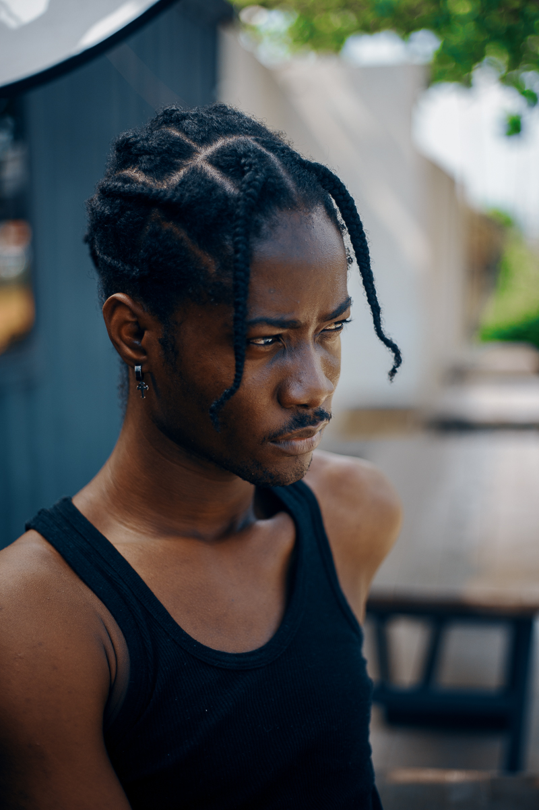

Dayonthetrack
Ghanaian musician and songwriter

Dayonthetrack, multi-talented African sensation
Here's a timeline of Dayonthetrack's life:
- 1998 - Born in Tema General Hospital to a family of four(now six including Dayonthetrack).
- 2012 - He was enrolled Chemu Senior High School which he completed after three years of studying General arts.
- 2015 - After He graduated from High School Dayonthetrack started his path in searching for a career he could embark in a life-long journey. He was first employed on his first job as a Sales Representative at Metropolitan Life Insurance, where he worked for three years in marketing their products.
- 2018 - He started his music journey and was already introduced to music and singing in primary school where he joined a school choir group. He started off the journey in a studio called "XLC" studios where he worked as a sound engineer and worked on the ground breaking viral song "DO THE DANCE" by Eddie Khae. He then joined from xlc to "groundup Chale" where he worked on multiple songs with a host of different artists including; Ghanaian Superstar Kwesi Arthur who is also related to him by blood. He also with Quamina MP, Twitch and Kofi Mole who are all now a part of a collaborative group called "KANKO WORLDWIDE"
Ghanaian genius Dayonthetrack